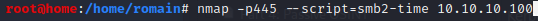
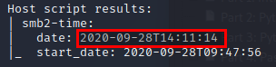
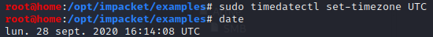
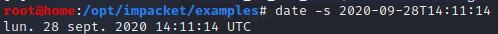
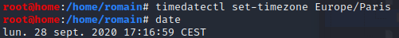

ERROR : [-] Kerberos SessionError: KRB_AP_ERR_SKEW(Clock skew too great)
- Kerberos is time-sensitive :
=> Times between client's clock and Kerberos KDC have to be within a five minutes range (mechanism to prevent replay attacks)
- Hack The Box European server is in Central Europe (CEST) : Different time zone
SOLUTION
- - Get Kerberos KDC time
- - nmap -p445 --script=smb2-time 10.10.10.100
- 
- => date
- 
-
- - Adjust PC (client) local time to Kerberos KDC time in UTC
- - timedatectl set-timezone UTC
 - - date -s 2020-09-28T14:11:14

- timedatectl status
#####
- To set back - - timedatectl set-timezone Europe/Paris
